!apt-get -qq install -y fonts-nanum > /dev/null3. 시각화
이 장에서는 먼저 그래프가 어떤 부분으로 이루어지고 어떤 순서로 쌓이는지 살펴본 뒤, matplotlib으로 막대그래프와 산점도를 그리고, seaborn으로 표 전체를 색으로 칠하는 히트맵을 그립니다.
3.1 준비
Colab의 기본 설정에서는 그래프의 한글이 네모로 깨집니다. 먼저 나눔고딕 글꼴을 설치합니다. 노트북을 열 때마다 한 번 실행하면 됩니다.
설치한 글꼴을 그래프에 쓰도록 설정하고 데이터를 읽습니다.
import pandas as pd
import matplotlib.pyplot as plt
from matplotlib import font_manager as fm
fm.fontManager.addfont("/usr/share/fonts/truetype/nanum/NanumGothic.ttf")
plt.rcParams["font.family"] = "NanumGothic" # 한글 글꼴
plt.rcParams["axes.unicode_minus"] = False # 음수 부호 깨짐 방지
주소 = "https://raw.githubusercontent.com/StatJeong/moj-python-lecture/main/data/"
수용자 = pd.read_csv(주소 + "inmates.csv")
시설현황 = pd.read_csv(주소 + "facilities.csv")
경고한글이 네모(□)로 나올 때
- 글꼴 설치 칸과 설정 칸을 그래프보다 먼저 실행했는지 확인합니다.
- 세션을 다시 시작했다면 두 칸을 다시 실행합니다. 설치한 글꼴도 함께 사라집니다.
- 축의 음수 부호만 네모로 나오면
axes.unicode_minus줄을 확인합니다.
Colab 노트북은 장마다 따로 실행되므로, 새 노트북을 열면 데이터를 다시 읽어야 합니다.
3.2 그래프의 구조: 층층이 쌓아 그리기
matplotlib 그래프는 한 번에 완성되지 않습니다. 코드 한 줄마다 그림판 위에 요소를 하나씩 쌓아 올려 만듭니다. 그래프 각 부분의 이름과 쌓는 순서를 알아 두면 처음 보는 그래프 코드도 읽을 수 있습니다.
그림판과 그래프 칸
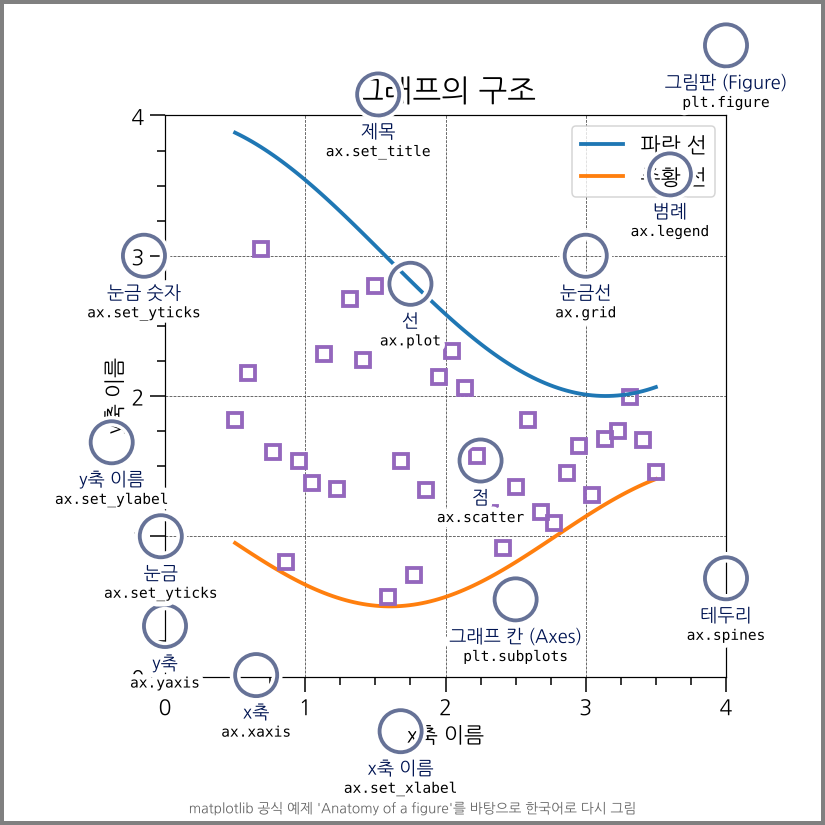
| 부분 | 영어 이름 | 만드는 코드 |
|---|---|---|
| 그림판 | Figure | plt.figure() |
| 그래프 칸 | Axes | plt.subplots() (막대나 선을 그리면 저절로 생기기도 함) |
| 제목 | title | plt.title(), ax.set_title() |
| x축, y축 이름 | xlabel, ylabel | plt.xlabel(), ax.set_xlabel() |
| 눈금 | ticks | plt.xticks(), ax.set_xticks() |
| 막대, 선, 점 | bar, line, marker | plt.bar(), plt.plot(), plt.scatter() |
| 범례 | legend | plt.legend() |
| 눈금선 | grid | plt.grid() |
| 테두리 | spines | ax.spines |
그림판(Figure)은 종이 한 장이고, 그래프 칸(Axes)은 그 종이 위에 그린 그래프 하나입니다. 그림판 하나에 그래프 칸을 여러 개 둘 수도 있습니다(아래 “칸 여러 개 그리기”).
한 줄씩 층을 쌓는 순서
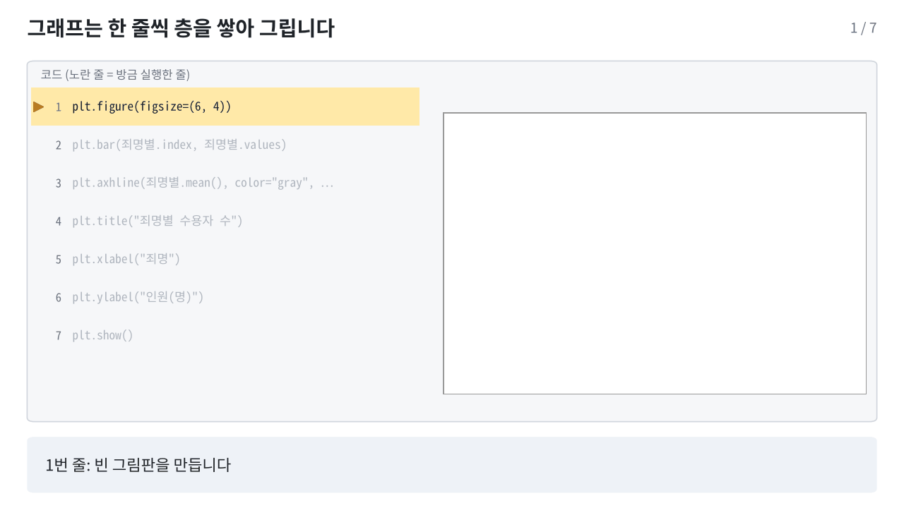
죄명별 = 수용자["죄명"].value_counts()
plt.figure(figsize=(6, 4)) # 1. 빈 그림판
plt.bar(죄명별.index, 죄명별.values) # 2. 막대 층
plt.axhline(죄명별.mean(), color="gray", linestyle="--") # 3. 평균선 층
plt.title("죄명별 수용자 수") # 4. 제목
plt.xlabel("죄명") # 5. x축 이름
plt.ylabel("인원(명)") # 6. y축 이름
plt.show() # 7. 화면에 보여주기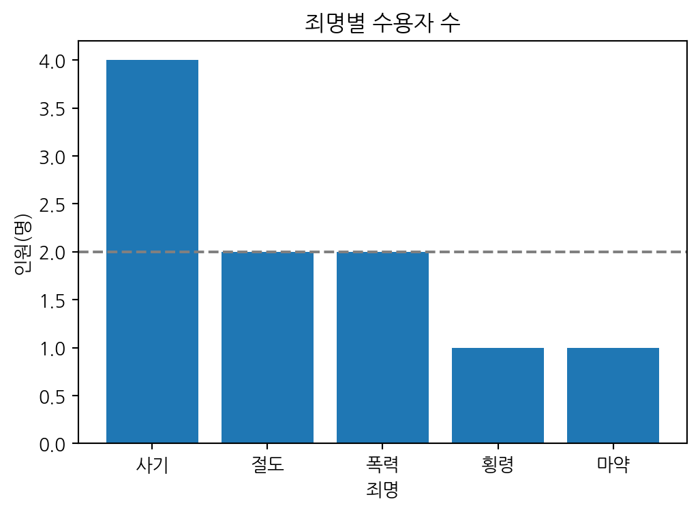
Colab에서 칸을 실행하면 모든 줄이 실행된 뒤 완성된 그림 하나만 보입니다. 위 움직이는 그림은 그 사이에 한 줄마다 무엇이 쌓이는지 나눠서 보여준 것입니다.
힌트줄을 빼면 그 층만 빠집니다
위 칸에서 평균선 줄(plt.axhline) 앞에 #을 붙여 주석으로 만들고 다시 실행해 보세요. 평균선만 사라지고 나머지는 그대로입니다. 그래프 코드를 받았을 때 줄을 하나씩 빼 보면 그 줄이 어떤 층을 쌓는지 알 수 있습니다.
노트나중에 쌓은 층이 위에 보입니다
평균선을 막대보다 먼저 그리면 막대에 가려질 수 있습니다. 순서를 바꾸지 않고 앞뒤를 정하려면 zorder= 값을 줍니다. 값이 클수록 위에 그려집니다.
두 가지 쓰는 방식: plt 방식과 ax 방식
matplotlib 코드는 두 가지 모양으로 씁니다. 같은 그림을 그리지만 이름이 조금씩 다릅니다.
| 하는 일 | plt 방식 (지금 그리는 칸에) | ax 방식 (칸을 이름으로 잡고) |
|---|---|---|
| 그림판과 칸 만들기 | plt.figure(figsize=(6, 4)) |
fig, ax = plt.subplots(figsize=(6, 4)) |
| 막대 | plt.bar(x, y) |
ax.bar(x, y) |
| 제목 | plt.title("제목") |
ax.set_title("제목") |
| x축 이름 | plt.xlabel("이름") |
ax.set_xlabel("이름") |
| y축 범위 | plt.ylim(0, 5) |
ax.set_ylim(0, 5) |
| 눈금 | plt.xticks(...) |
ax.set_xticks(...) |
| 범례 | plt.legend() |
ax.legend() |
plt 방식은 짧은 그래프 하나를 그릴 때, ax 방식은 칸이 여러 개이거나 세밀하게 꾸밀 때 씁니다. 6장 6.8절의 연보 도표는 ax 방식으로 그렸습니다. AI가 주는 코드에는 두 방식이 섞여 나오는 경우가 많으니 둘 다 읽을 수 있으면 좋습니다.
칸 여러 개 그리기
fig, axes = plt.subplots(1, 2, figsize=(10, 4)) # 그림판 하나에 칸 두 개 (1행 2열)
axes[0].bar(죄명별.index, 죄명별.values) # 왼쪽 칸
axes[0].set_title("죄명별 수용자 수")
axes[1].scatter(수용자["상담횟수"], 수용자["징벌횟수"]) # 오른쪽 칸
axes[1].set_title("상담횟수와 징벌횟수")
plt.tight_layout() # 칸 사이 간격을 자동으로 맞춤
plt.show()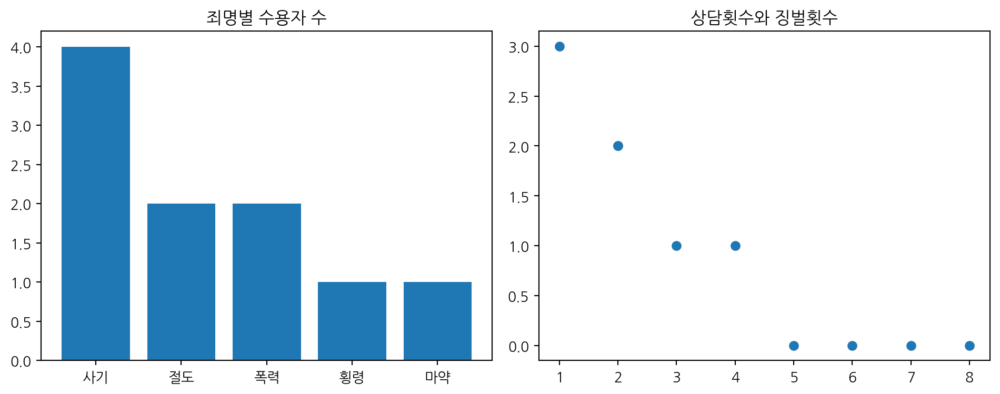
axes[0], axes[1]은 1장 리스트처럼 0부터 세는 칸 번호입니다.
경고두 방식의 이름을 섞으면 오류
| 잘못 쓴 코드 | 오류 | 고친 코드 |
|---|---|---|
ax.title("제목") |
TypeError: 'Text' object is not callable |
ax.set_title("제목") |
plt.set_title("제목") |
AttributeError: module 'matplotlib.pyplot' has no attribute 'set_title' |
plt.title("제목") |
ax 방식은 대부분 이름 앞에 set_이 붙습니다(set_title, set_xlabel, set_ylim). 막대·선·점(bar, plot, scatter)과 범례(legend)는 두 방식의 이름이 같습니다.
3.3 막대그래프: 죄명별 인원
먼저 그릴 값을 만듭니다.
죄명별 = 수용자["죄명"].value_counts()
죄명별죄명
사기 4
절도 2
폭력 2
횡령 1
마약 1
Name: count, dtype: int64plt.figure(figsize=(6, 4))
plt.bar(죄명별.index, 죄명별.values)
plt.title("죄명별 수용자 수")
plt.xlabel("죄명")
plt.ylabel("인원(명)")
plt.show()
| 코드 | 하는 일 |
|---|---|
plt.figure(figsize=(6, 4)) |
가로 6, 세로 4 크기의 그림판 만들기 |
plt.bar(x, y) |
막대그래프 그리기 |
plt.title(), plt.xlabel(), plt.ylabel() |
제목과 축 이름 |
plt.show() |
그림 보여주기 |
노트그래프마다 plt.figure()로 시작
한 칸에서 plt.figure() 없이 그래프를 두 번 그리면 같은 그림 위에 겹쳐 그려집니다. 그래프마다 plt.figure()로 새 그림판을 만듭니다.
힌트막대 순서 정하기
value_counts()는 많은 순서로 정렬합니다. 이름 순으로 그리려면 .sort_index()를, 원하는 순서가 있으면 .reindex(["S1", "S2", "S3", "S4"])처럼 순서를 직접 정합니다.
3.4 산점도: 상담횟수와 징벌횟수
숫자 두 개의 관계를 볼 때는 산점도를 씁니다.
plt.figure(figsize=(6, 4))
plt.scatter(수용자["상담횟수"], 수용자["징벌횟수"])
plt.title("상담횟수와 징벌횟수")
plt.xlabel("상담횟수")
plt.ylabel("징벌횟수")
plt.show()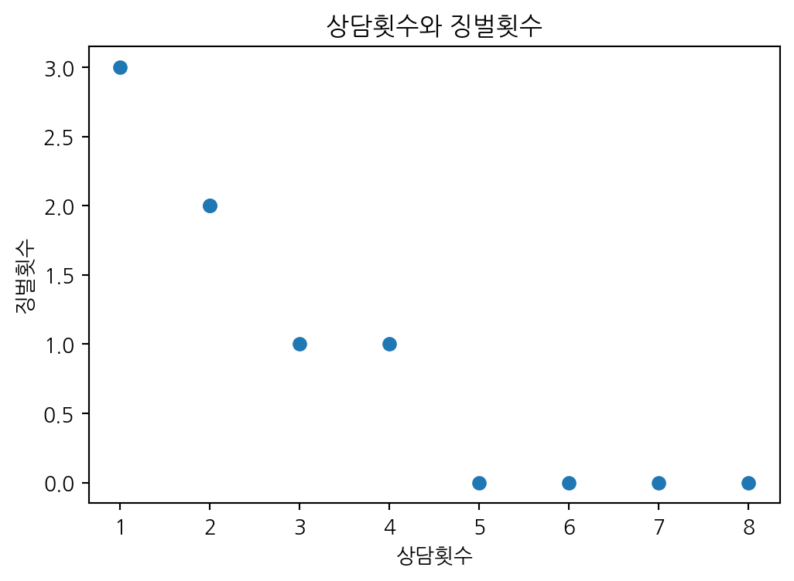
경고그래프에 보이지 않는 값
수용자는 10명인데 점은 8개만 보입니다. 1007번은 상담횟수가 비어 있어 빠졌고, 1001번과 1009번은 둘 다 (2, 2)라서 점이 겹쳤습니다. 그래프는 빈칸을 아무 말 없이 빼고 그리고, 같은 위치의 점은 하나로 보입니다. 그래프만 보고 판단하기 전에 데이터를 함께 확인합니다.
3.5 시설별 수용률
시설현황["수용률"] = (시설현황["현원"] / 시설현황["정원"] * 100).round(1)
plt.figure(figsize=(6, 4))
plt.bar(시설현황["시설"], 시설현황["수용률"])
plt.axhline(100, color="gray", linestyle="--") # 수용률 100% 기준선
plt.title("시설별 수용률")
plt.ylabel("수용률(%)")
plt.show()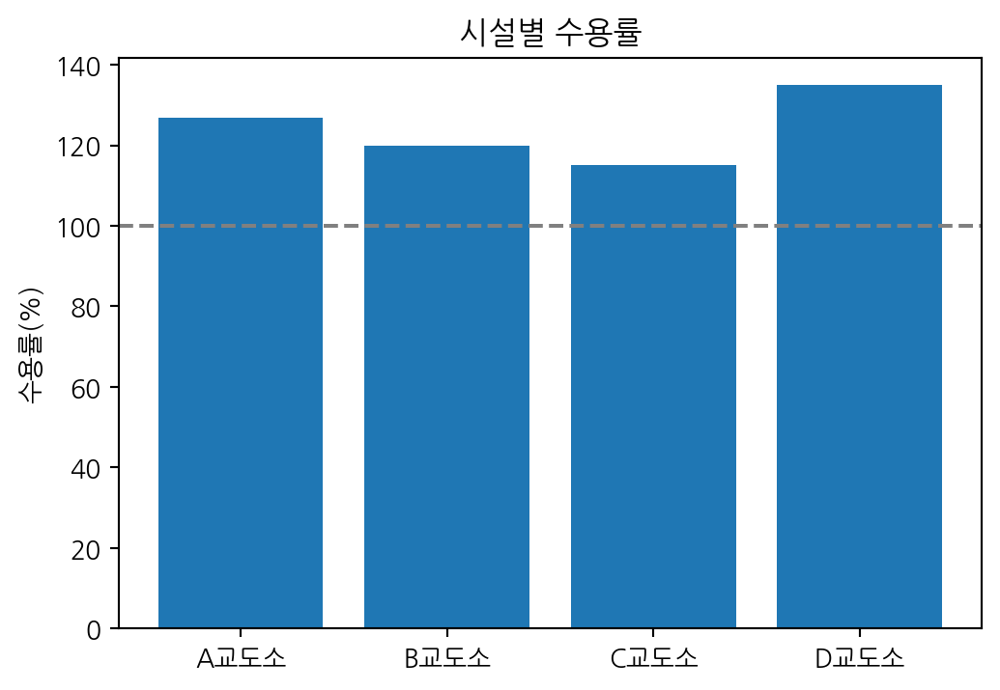
3.6 집계 결과를 바로 그리기
groupby()로 집계한 결과에 .plot()을 붙이면 바로 그래프가 됩니다.
시설별징벌 = 수용자.groupby("시설")["징벌횟수"].sum()
시설별징벌.plot(kind="bar", figsize=(6, 4), rot=0, title="시설별 징벌횟수 합계")
plt.ylabel("징벌횟수")
plt.show()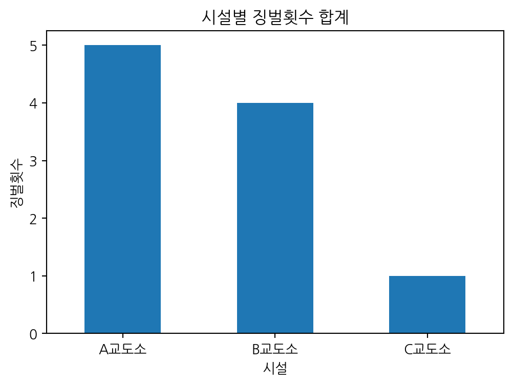
3.7 seaborn: 표를 색으로 칠하는 히트맵
seaborn은 matplotlib 위에서 동작하는 그래프 도구입니다. 표(DataFrame)를 넘겨주면 색 구분, 범례 같은 것을 알아서 그려 줍니다. Colab에는 이미 설치되어 있습니다. 이 강의에서는 표 전체를 색으로 칠하는 히트맵을 씁니다(6장에서도 씀).
import seaborn as sns
sns.set_theme(style="whitegrid", font="NanumGothic", rc={"axes.unicode_minus": False})
경고sns.set_theme()은 한글 글꼴 설정을 지웁니다
sns.set_theme()을 글꼴 없이 실행하면 3.1절에서 한 글꼴 설정이 기본값으로 돌아가 한글이 다시 네모로 나옵니다. 위처럼 font="NanumGothic"을 함께 넣습니다. 이 칸 다음부터 그리는 matplotlib 그래프에도 seaborn 모양이 적용됩니다.
seaborn은 matplotlib 위에 쌓인 층
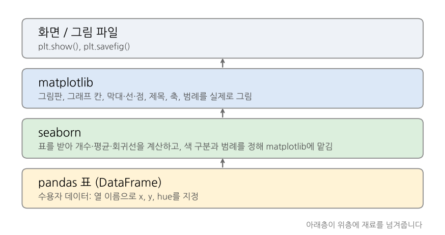
seaborn은 그림을 직접 그리지 않습니다. 표를 받아 개수, 평균, 회귀선 같은 계산을 하고 색과 범례를 정한 다음, 실제 그리기는 matplotlib에 맡깁니다. 그래서 seaborn으로 그린 그래프 위에 3.2절의 matplotlib 명령(plt.title, plt.ylabel, plt.axhline 등)으로 층을 더 쌓을 수 있습니다. 아래 히트맵도 seaborn이 그린 층 위에 matplotlib으로 제목을 더한 것입니다.
seaborn에는 히트맵 말고도 함수가 많습니다. 하는 일에 따라 세 묶음으로 나뉘므로, AI가 처음 보는 seaborn 함수를 주면 어느 묶음인지부터 확인하면 됩니다.
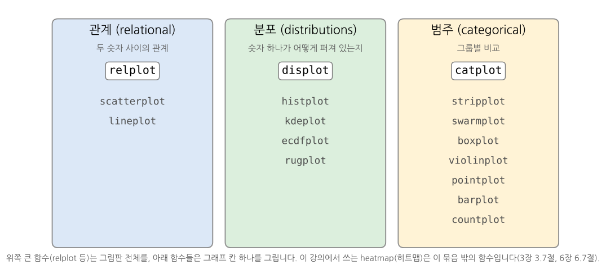
자세한 설명: seaborn 공식 문서 Overview of seaborn plotting functions
힌트seaborn 함수는 그린 칸을 돌려줍니다
ax = sns.heatmap(상관)처럼 결과를 받아 두면, 3.2절의 ax 방식(ax.set_title(...), ax.set_ylabel(...))으로 그 칸에 층을 이어서 쌓을 수 있습니다.
상관계수 히트맵: heatmap
상관 = 수용자[["나이", "형기_개월", "상담횟수", "징벌횟수"]].corr().round(2)
plt.figure(figsize=(5, 4))
sns.heatmap(상관, annot=True, cmap="RdBu_r", vmin=-1, vmax=1)
plt.title("숫자 열 사이의 상관계수")
plt.show()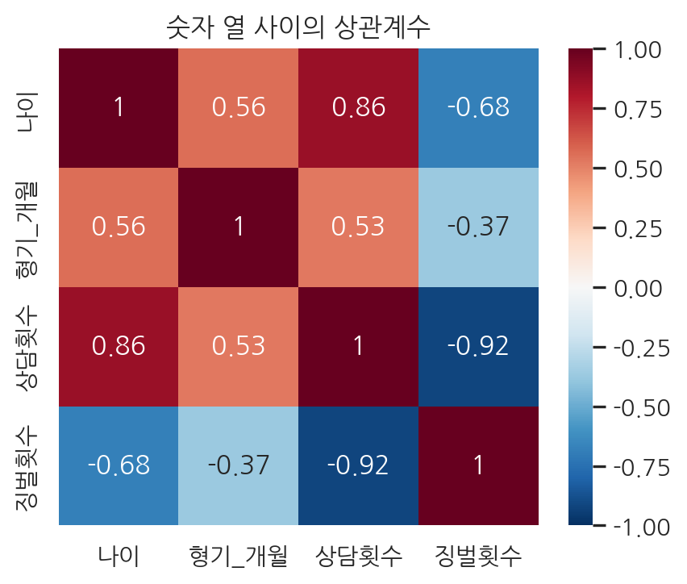
corr()는 숫자 열끼리의 상관계수(-1 ~ 1)를 표로 계산하고, heatmap은 그 표를 색으로 칠합니다. annot=True는 칸 안에 숫자를 적습니다.
노트10명 자료의 상관계수
상담횟수와 징벌횟수의 상관계수가 -0.92로 아주 강하게 나오지만, 강의용으로 만든 10명짜리 가상 자료라서 그렇습니다. 사람 수가 적으면 상관계수가 우연히 크게 나오기 쉽습니다. 상관이 크다고 한쪽이 다른 쪽의 원인이라는 뜻도 아닙니다.
힌트어떤 그래프를 그릴 수 있는지 둘러보기
- matplotlib 갤러리: https://matplotlib.org/stable/gallery/index.html
- seaborn 갤러리: https://seaborn.pydata.org/examples/index.html
마음에 드는 그림을 누르면 그 그림을 만든 코드가 함께 나옵니다. 열 이름을 우리 데이터에 맞게 바꾸거나, 그림 주소를 AI에게 주고 “이 예제처럼 수용자 데이터로 그려줘”라고 요청하면 됩니다.
3.8 그래프 저장하기
plt.show() 앞에 plt.savefig()를 넣으면 그림 파일로 저장됩니다. 보고서에 넣을 때는 dpi를 150 이상으로 합니다.
plt.figure(figsize=(6, 4))
plt.bar(죄명별.index, 죄명별.values)
plt.title("죄명별 수용자 수")
plt.savefig("죄명별_수용자수.png", dpi=150, bbox_inches="tight")
plt.show()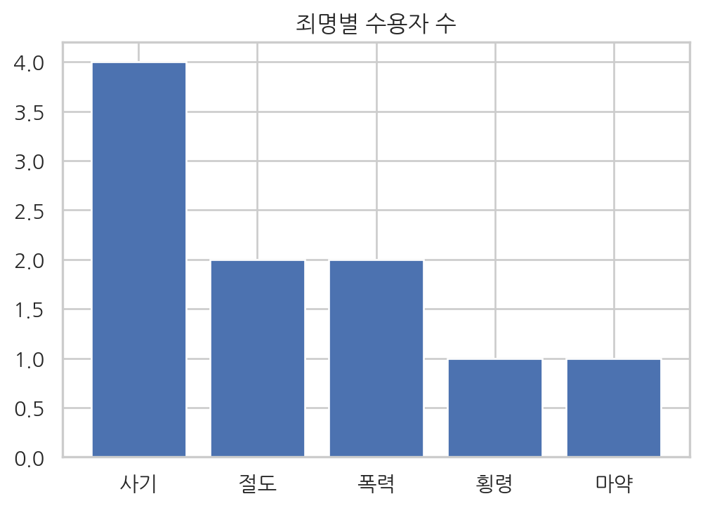
경고savefig는 show보다 먼저
plt.show() 다음에 plt.savefig()를 실행하면 빈 그림이 저장됩니다. 그림을 보여주면서 그림판이 닫히기 때문입니다. 저장하는 줄은 항상 plt.show() 앞에 둡니다.
힌트seaborn 그래프도 같은 방법으로 저장합니다
seaborn은 matplotlib 위에서 그리므로 plt.savefig()를 그대로 씁니다.
3.9 연습문제
- 경비처우급별 인원을 막대그래프로 그리세요.
# 여기에 코드를 작성해 보세요정답 보기
처우급별 = 수용자["경비처우급"].value_counts().sort_index()
plt.figure(figsize=(6, 4))
plt.bar(처우급별.index, 처우급별.values)
plt.title("경비처우급별 인원")
plt.ylabel("인원(명)")
plt.show()
- 나이와 형기_개월의 관계를 산점도로 그리세요.
# 여기에 코드를 작성해 보세요정답 보기
plt.figure(figsize=(6, 4))
plt.scatter(수용자["나이"], 수용자["형기_개월"])
plt.title("나이와 형기")
plt.xlabel("나이")
plt.ylabel("형기(개월)")
plt.show()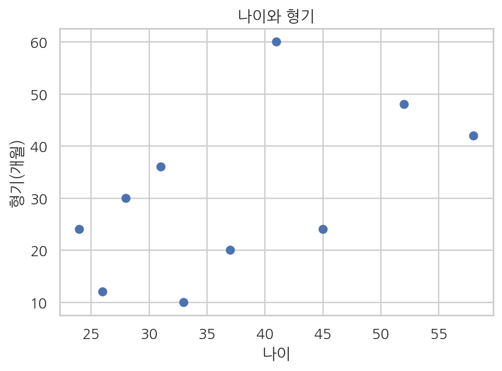